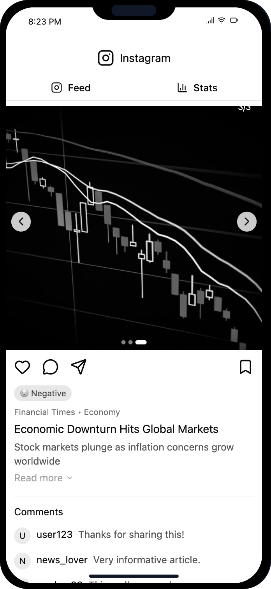
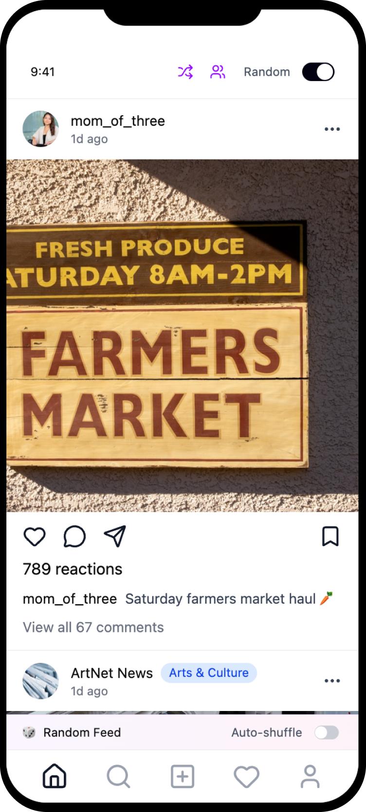
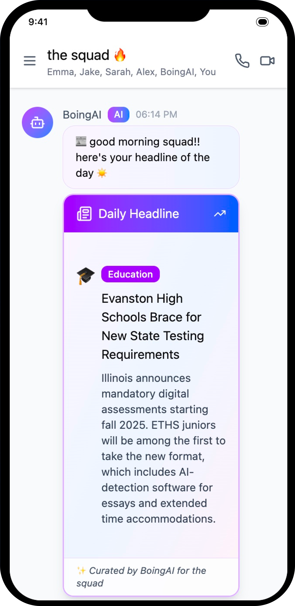

Northwestern's Knight Lab brings together interdiciplinary journalists, designers and developers to innovate in the news media space. In Fall 2025, I joined a Knight Lab team worked to rethink how news reaches young audiences on social media — where most Gen Z users encounter the headlines.
Our project began with an analysis of unreleased data from the Next Gen News 2 study by the Knight Lab and Financial Times Strategies, which aimed to anticipate how most news consumers will behave by 2030. This includes a survey of 5,000 respondants and diary studies with 84 participants from Brazil, India, Nigeria, the United Kingdom, and the United States. My team saw that 76% of respondents aged 25 or younger said they access news on social media. We also saw that this comes with a range of grievances, so we asked,
How might we use social media to bring news to the future generation of users in a way that leaves them informed, but not frustrated?
Beyond our data analysis, we also interviewed 20+ social media users between the ages of 18 and 25. Three common personas emerged:
1.
The Swamped
Consumes so much news that they become uncomfortable.
Frustrated by negativity and misinformation.
"I like to be informed, but it's not always worth the stress."
2.
The Scroller
Passively scrolls through headlines on social media, often unsatisfied by what they see.
"What do I get out of this?"
3.
The Selective
Loves social media for entertainmnet and socialization, but rarely engages with news that's not tailored to their personal interests.
"I mean I'll look at [news] if it comes up, but I'm not gonna go searching for it."
We brainstormed over a dozen ideas. Some of our early favorites included a “News Wrapped” weekly summary feature and browser extensions that could collect information and offer relevant suggestions for news habit improvement. However, when we tested low-fidelity designs with users, we found that people preferred features they didn't have to actively seek out. Downloading an extension or making the effort to read a weekly summary wasn't realistic for them.

So, we then pivoted to focus on features that could seamlessly integrate into users' existing social media habits. We narrowed down to three ideas -- one for each persona -- which we tested and iterated on until they were polished prototypes. Key changes involved making sure our features could be turned on and off, and fit into existing social media norms.

As users spend more time engaging with content that that is negative or poorly fact checked, their feed will begin to lose its color, encouraging them to move on to something else. It will regain its color as they engage with more positive and credible content.

Users have the option to break out of their usual feeds by shuffling their algortithms. They can either do this randomly, or they can switch to a friend's algorithm via a shared code.

The chatbot will message group chats with news that is specifically tailored to them. This brings relevant news straight to the user, and facilitates conversation around it.
We presented these ideas to Knight Lab faculty, alongside a written report to be referenced if these ideas are ever able to be developed in the future.

As a team of journalism students who consume plenty of news, we went into this project with a lot of our own ideas of what to create. But to make meaningful designs, we had to step out of our bubble. Our project would never have been as successful as it was if we hadn't focused heavily on user research, user testing and data analysis.